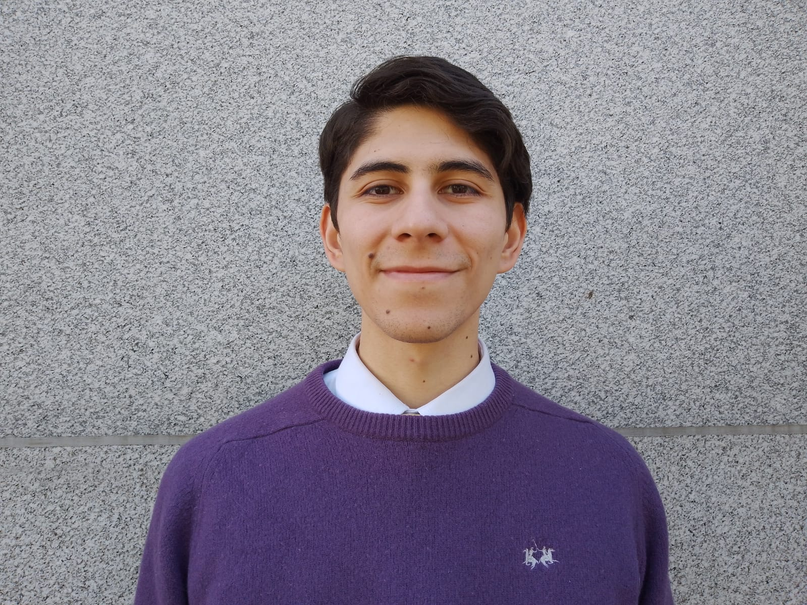

BENJAMIN URQUIA | WDD 130
I am from Rosario, Argentina. I am 23 years old and I exited to learn! I am studying at BYU which allows me to accommodate my study and work times at my convenience. I live in the city of Rosario with my wife Brenda, we got married in January 2022 and we are very happy with our cat Jake. I love soccer, computing and electronics, I spend the day with my family and we watch movies together. In my free time I meet with my friends. My parents are church members and have been since before they were married so I was born knowing the gospel and living the teachings of Jesus Christ.